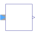
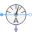

QuasiRMS |

|
Information
This information is part of the Modelica Standard Library maintained by the Modelica Association.
This block determines the continuous quasi RMS value of a polyphase system, representing an equivalent RMS vector or phasor.
y = sqrt(sum(u[k]^2 for k in 1:m)/m)
Parameters (1)
| m |
Value: 3 Type: Integer Description: Number of phases |
|---|
Connectors (2)
| y |
Type: RealOutput Description: Connector of Real output signal |
|
|---|---|---|
| u |
Type: ComplexInput[m] |
Used in Components (2)
|
Modelica.Electrical.QuasiStatic.Polyphase.Sensors Continuous quasi voltage RMS sensor for polyphase system |
|
|  |
Modelica.Electrical.QuasiStatic.Polyphase.Sensors Continuous quasi current RMS sensor for polyphase system |